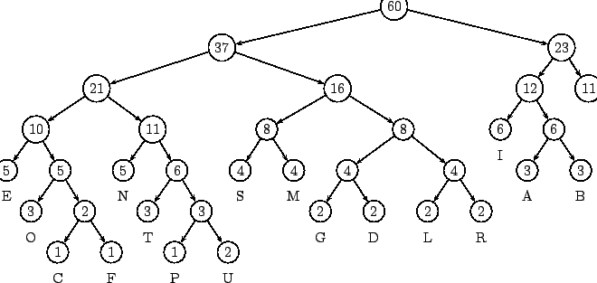
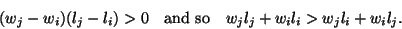
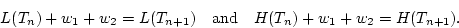

Another source of inefficiency may lie in using the same number of bits to represent a common letter, like ``e'' as to represent ``q'' which occurs much less frequently. What if we permit character codes to have a variable length? An apparent difficulty is the need to have a neutral separator character to indicate the end of one character code, and so delimit it from the next. Say a code has the prefix property if no character code is the prefix, or start of the the code for another character. Clearly a code with the prefix property avoids this need to have additional separators, while permitting variable lengths. An obvious question is:
In Table 3.1 we give an example of such a prefix code for a small alphabet, and contrast it with a simple fixed length code. It is clear that there are savings in this case which make it worth going further. We will see shortly why the example has the prefix property; in the meantime check that the string ``0000100111'' in Code 2 decodes uniquely as ``acbd''.
Consider now a binary tree, in which each leaf node is labelled with a symbol. We can assign a binary code to each symbol as follows: associate ``0'' with the path from a node to its left child, and ``1'' with the corresponding path to the right child. The code for a symbol is obtained by following the path from the root to the leaf node containing that symbol. The code necessarily has the prefix property; the tree property means that a leaf node cannot appear on a path to another leaf. Conversely it is clear how to associate a binary tree with a binary code having the prefix property; the code describes the shape of the tree down to the leaf associated with each symbol.
Of course a fixed length code necessarily has the prefix property. We show in Fig. 3.6 the binary trees corresponding to the two codes given in Table 3.1, thus incidentally demonstrating that the variable length code in the example does have the prefix property.
We now describe how to build the binary Huffman code for a given message. This code has the prefix property, and in a fairly useful sense turns out to be the best such code. We describe the code by building the corresponding binary tree. We start by analysing the message to find the frequencies of each symbol that occurs in it. Our basic strategy will be to assign short codes to symbols that occur frequently, while still insisting that the code has the prefix property. Our example will be build around the message
A SIMPLE STRING TO BE ENCODED USING A MINIMAL NUMBER OF BITS 3.6The corresponding frequencies are given in Table 3.2; note that in this case, we choose to include the space symbol `` '', written in the table as
.
Now begin with a collection (a forest) of very simple trees, one for each symbol to be coded, with each consisting of a single node, labelled by that symbol, and the frequency with which it occurs in the string. The construction is recursive: at each stage the two trees which account for the least total frequency in their root nodes are selected, and used to produce a new binary tree. This has, as its children the two trees just chosen: the root is then labelled with the total frequency accounted for by both subtrees, and the original subtrees are removed from the forest. The construction continues in this way until only one tree remains; that is then the Huffman encoding tree.3.7
|  |
The resulting Huffman encoding tree for our example string is shown in
Fig 3.7. By construction, the symbols only occur at leaf
nodes, and so the corresponding code has the prefix property. In the
diagram, these leaf nodes still carry the frequencies used in their
construction; formally once the tree has been built, the symbols which
are shown below the leaves should replace the frequencies at the
nodes. The right-most node is the symbol . As already
described, the character encoding is the read by traversing from the
root to each leaf, recording ``0'' if the left hand branch is
traversed, and ``1'' if the right hand one is taken. Thus ``S'' is
encoded as ``0100'', while is ``11'' and ``C'' is ``000110''.
L(T) =  liwi liwi |
(3.2) |
We are interested in the case when the tree is an encoding tree and the weights are the frequency of occurrence of the symbols associated with the leaf nodes. In that case L(T) is the length of the message after encoding, since at node i, the character occurs a total of wi times, and requires li bits to encode it. We now show that a Huffman encoding tree gives the best encoding. Say that a binary tree T is optimal if L(T) has its minimum value over all possible trees with the same set of leaf nodes.

Consider now the effect on the weighted leaf path length L(T) of interchanging the weights on nodes i and j. The new weighted leaf path length is
We can now show that a Huffman tree is optimal. This argument was adapted from Gersting (1993, Page 402). We establish the result by induction on the number n of leaf nodes in the tree. The result is clear for n = 1.
Next note that in any optimal binary tree, there are no nodes with single children -- replacing the child by the parent produces a shorter weighted external path length.
Consider now a set of n + 1 weights wi with n + 1 2, which by
Lemma 3.9 we suppose to be ordered such that
w1
2, which by
Lemma 3.9 we suppose to be ordered such that
w1 w2
w2 ...
... wn + 1 in such a way that the corresponding
paths lengths satisfy
l1 l2 ... ln. Let Tn + 1
be an optimal tree for these weights with weighted leaf path length
L(Tn + 1). By our choice of labelling w1 occurs on the longest
path, as does its sibling wj; since they are siblings, l1 = lj. Since
li
wn + 1 in such a way that the corresponding
paths lengths satisfy
l1 l2 ... ln. Let Tn + 1
be an optimal tree for these weights with weighted leaf path length
L(Tn + 1). By our choice of labelling w1 occurs on the longest
path, as does its sibling wj; since they are siblings, l1 = lj. Since
li l2
l2 lj, we have l1 = l2. Thus the new
tree T'n + 1 obtained by interchanging nodes 2 and j have the
same weighted external path length.
lj, we have l1 = l2. Thus the new
tree T'n + 1 obtained by interchanging nodes 2 and j have the
same weighted external path length.
Next construct a new tree Tn with a new ``leaf'' node
w = w1 + w2 by combining w1 and w2 from T'n + 1 to give a tree with
n leaf nodes. Let Hn be a Huffman tree on these nodes, and note
that, by construction the tree obtained by replacing the single node
w in Hn by the nodes w1 and w2, the two smallest weights,
is a Huffman tree Hn + 1. By induction, we have
L(Tn) L(Hn), since they have the same leaf nodes. We now calculate:
L(Hn), since they have the same leaf nodes. We now calculate:

Thus L(Tn + 1)
A little more can be said, centred round the need to have the coding tree available when decoding. Of course, for ``general purpose'' language, the letter frequencies are well known, and could be assumed. In general, the need to transmit the coding tree as well as the message reduces the effectiveness of the method a little. And it can be impractical to preprocess a message to get the exact frequencies of the symbols before any of the message is transmitted. There is a variant however, called adaptive Huffman coding, in which the frequencies are assumed initially to be all the same, and then adjusted in the light of the message being coded to reflect the actual frequencies. Since the decoder has access to the same information as the encoder, it can be arranged that the decoder changes coding trees at the same point as the encoder does; thus they keep in step. One way to do that is to introduce extra ``control'' symbols to the alphabet, and use these to pass such information.
Modern coding schemes such as zip (or gzip or pkzip) are based on these ideas.